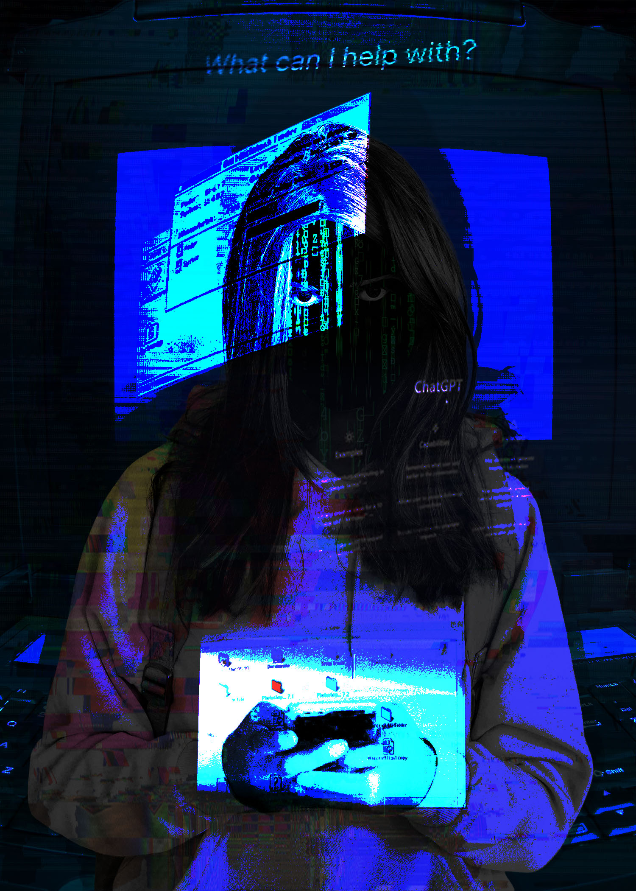

When creating my Photomontage I want to express the idea of overusing AI that we start to lose our humanity and becoming one with the AI that we can't even tell each other apart. To express the danger of AI consumption I want to give it a weird-core and with some sci-fi vibe. I took some public domain images of a person holding their phone, computer background, statics, and websites to convey my message. First, I saturated and decreased the brightness of the girl to give it more of an eerie horror vibe as well as changing the hue to black and white. Then, I cut out the images of computer webs and change their blend to hard mix and vivid light for a more computer aesthetic like the person is being transported inside the computer or is the manifestation of the AI itself. I also duplicated an image of the girl and made a clipping layer where I filled her entire body with black to create the shadow effect. There is also a mask layer to make the shadow look more faded and blurred out. To make the rest of the images’ color match I added a navy blue solid color layer to create a color balance and changed the blend to hard mix to solidify the frightening look. Lastly, I dragged a glitchy effect image to the top of the layers and gave it an overlay blend to give the appearance of someone behind a computer screen because we use AI so much that we became dependent on AI and feeling trapped that we can't do things like we used to.